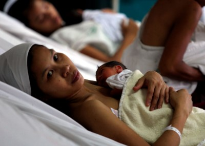
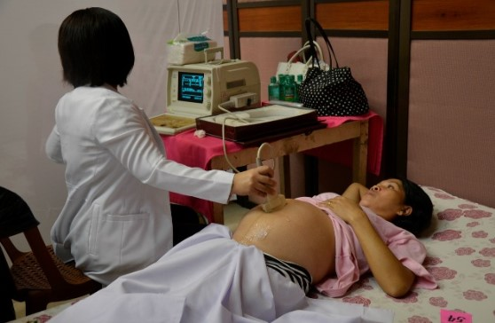
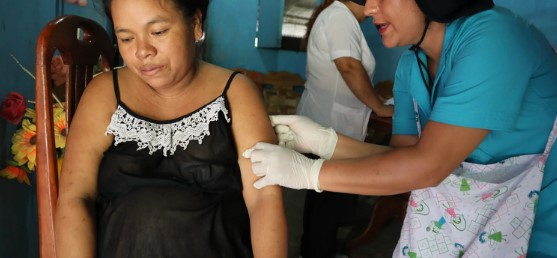
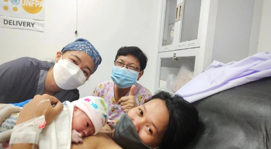

Safe Motherhood
Ang Maternal at Child Health ay pamamaraan upang masiguro ang kaligtasan ng ina at sanggol sa panahon ng pagbubuntis hanggang kapanganakan nito.
Kahalagahan ng Maternal at Child Health
-
Nakakatulong sa pagpigil ng pagkamatay ng ina at ng sanggol sa pamamagitan ng pagbibigay ng impormasyon at serbisyo ukol sa mga inirerekomendang pamamaraan sa MCH.
-
Nagpapabilis sa pagpapagaling ng ina matapos manganak upang mas maalagaan ng husto ang kanyang anak.

Paano malalaman kung ang isang babae ay buntis?
-
Pagtigil ng regla
-
Pagduduwal
-
Madalas na pag-ihi
-
Pagiging antukin
-
Pagkahilo
-
Paglaki ng suso
Mga mahahalagang Datos:
-
44% ng mga babaeng buntis ay nagkakaroon ng komplikasyon
-
MMR = 162/100,000 (9-10 babe namamatay bawa’t araw ng dahil sa komplikasyon ng pagbubuntis at panganganak.)
-
IMR = 24/1000 sanggol ang namamatay
Sanhi ng Pagkamatay ng mga Ina:
-
Pagdurudo pagkapanganak
-
Kumbulsyon (eclampsia)
-
Impeskyon
-
Malaking sanggol o makitid na sipit-sipitan
-
Komplikasyon na dulot ng abortion
Mga Bagay na Dapat Tandaan Habang Buntis
Prenatal Check-up
Magpa-prenatal check-up ng hanggang apat na beses bago manganak. Kumunsulta sa doktor o midwife upang makasigurong ligtas at malusog ang ina at sanggol sa sinapupunan.

Kahalagahan ng Prenatal-Check-up:
-
Paraan upang mamonitor ang kalagayan ng ina at sanggol sa panahon ng pagbubuntis
-
Sa regular na check-up, maaaring maagapan ang mga posibleng problema o komplikasyon sa pagbubuntis.
-
Pagtuturo sa isang nagbubuntis ng mga nararapat niyang gawin at mga dapat na iwasan sa kanyang pagbubuntis.
-
Paghahanda sa babae at ng kanyang pamilya sa mga maaaring mangyari sa susunod na buwan.
Tetanus Toxoid Immunization
Importanteng magpainiksyon laban sa tetanus ang ina para maiwasan ang impeksyon sa kanya at sa kanyang anak.

Tetanus Toxoid Immunization
-
Protein
-
Calcium
-
Folic Acid
-
Iodine
-
Iron with folic acid
-
Maiging kumain ang nagbubuntis ng mga pagkaing mayaman sa sustansiya na makakatulong sa paglaki ng sanggol at pag-iwas sa sakit gaya ng anemia o impeksyon.
Mahalaga para sa iyo at iyong baby na manatili kang malusog habang ikaw ay buntis:
-
Kumain ng sapat at masustansyang pagkain
-
Uminom nang mula 8 hanggang 10 basong tubig araw-araw
-
Iwasan ang kumain ng maaalat
-
Mag-ehersisyo nang angkop sa buntis at maglakad-lakad
-
Maging malinis sa pangangatawan at ngipin
-
Huwag uminom ng alak o manigarilyo
-
Huwag uminom ng gamot na hindi kumokonsulta sa midwife, nars o doktor
Birth Plan
Bilang paghahanda, gumawa ng “birth plan”. Sumangguni sa partner at health provider (doktor o midwife) upang matulungan sa pagpaplano ng panganganak
-
Saan manganganak?
-
Sino ang makakasama?
-
Ano ang mga dapat dalhin?
-
Magkano and magagastos?
-
May wastong ipon ba para sa panganganak?
Mga dapat tandaan:
-
Siguraduhing naka-enroll sa Philhealth
-
Alamin ang mga pasilidad na accredited ng Philhealth
-
Alamin kung saan manganganak, kailan at paano pupunta doon at kung sino ang makakasama mo
-
Maghanda ng mga gamit na kakailanganin ninyo ni baby
-
Magsimulang mag-ipon
-
Alamin ang emergency signs, emergency contact numbers, mga dapat gawin, at kumilos agad.
Mga Palatandaan ng panganib sa pagbubuntis na dapat bantayan (Emergency Signs):
-
Minamanas ang paa, kamay o kaya ay mukha
-
Labis na pananakit ng ulo, pagkahilo, panlalabo ng paningin
-
Pagdurugo o may bahid dugo sa puwerta
-
Pamumutla o Anemya
-
Lagnat o panginginig ng katawan
-
Nagsusuka
-
Mabilis at hirap sa paghinga
-
Labis na pananakit ng puson
-
May lumalabas sa puwerta o may sugat sa ari
-
Nahihirapan sa pag ihi
-
Paglabas ng matubig na bagay sa puwerta
-
Paninigas o pagkawala ng malay
-
Kawalan/mahina ang galaw ng sanggol (kulang sa 10 sipa sa loob ng 12 oras sa ika 4-5 buwan ng pagbubuntis)
Manganak lamang sa health center, ospital o lying -in clinic.

Mas ligtas doon dahil mayroong:
-
Mga dalubhasang midwife, nars or doktor na tutulong sa iyong panganganak
-
Kumpleto at malinis (sterile) na mga gamit at supplies
-
Wasto at agarang lunas, at referral sakaling magkaroon ng emergency
-
Bakuna laban sa Hepatitis B at BCG para kay baby, na ibinibigay sa loob ng 24 oras pagkapanganak
References
-
Comprehensive Sexuality Education Empowers Young People. (n.d.). Retrieved April 14, 2024., from Department of Health.
https://caro.doh.gov.ph/comprehensive-sexuality-education-empowers-young-people/?fbclid=IwAR3aAsY500c7NqAqNl5102i_DyWKkGWmRiPFzXP4CjAUO80_DVRNKkVIg7M
-
Family Planning Program. (n.d.). Retrieved April 14, 2024, from Department of Health.
https://doh.gov.ph/uhc/health-programs/family-planning-program/
-
Family Planning: Empowering People, Developing Nations. (2020). Retrieved April 17, 2024, from Western Cape Government.
https://www.westerncape.gov.za/general-publication/family-planning-empowering-people-developing-nations?fbclid=IwAR0iRfYC2B0C2MEn8IBZLnVBbSmchWKs8VCUnTPjGrrPUJzYzfiy9JuTr9k
-
ICYMI: DepEd, DOH, POPCOM Launch Convergence of Comprehensive Sexuality Education and Adolescent Reproductive Health. (n.d.). Retrieved April 14, 202, from Department of Health.
https://doh.gov.ph/press-release/icymi-deped-doh-popcom-launch-convergence-of-comprehensive-sexuality-education-and-adolescent-reproductive-health/
-
Myths vs. Facts: Family planning. (2019, January 7). (M. S. Lifestyle, Producer) Retrieved April 14, 2024, from Manila Standard:
https://manilastandard.net/?p=284754
-
Rural Health Midwives Placement Program (RHMPP)/ Midwifery Scholarship Program of the Philippines (MSPP). (n.d.). Retrieved April 14, 202, from Department of Health.
https://doh.gov.ph/uhc/health-programs/rural-health-midwives-placement-program-rhmpp-midwifery-scholarship-program-of-the-philippines-mspp/
-
Sexual and Reproductive Health and Research (SRH). (n.d.). Retrieved April 14, 2024, from World Health Organization.
https://www.who.int/teams/sexual-and-reproductive-health-and-research-(srh)/human-reproduction-programme
-
Stop Rumours: Get the Facts: Myth and Misconceptions about Family Planning Methods. (n.d.). Retrieved April 13, 2024, from Jhpiego:
https://globalcompass.wpengine.com/wp-content/uploads/Myths_and_Misconceptions_booklet.pdf